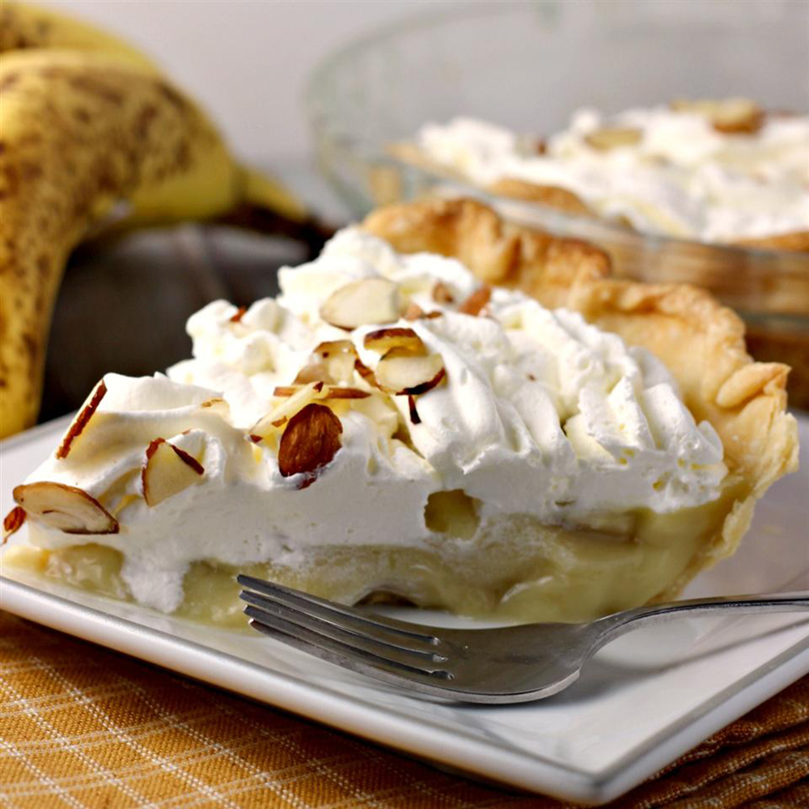

Banana Cream Pie

This banana cream pie recipe makes a great pie. This pie is one of the yummiest things on earth.
Ingredients
- ¾ cup white sugar
- ⅓ cup all-purpose flour
- ¼ teaspoon salt
- 2 cups milk
- 3 egg yolks, beaten
- 2 tablespoons butter
- 1 ¼ teaspoons vanilla extract
- 1 (9 inch) baked pastry shell, cooled
- 4 bananas, sliced
Steps
- Preheat the oven to 350 degrees F (175 degrees C).
- Combine sugar, flour, and salt in a saucepan. Gradually stir in milk. Cook, stirring constantly,
over medium heat until mixture boils and thickens.
- Place egg yolks in a medium bowl. Whisk in a small amount of hot mixture, then immediately add
egg yolk mixture to remaining hot mixture.
- eturn the saucepan to the burner and cook, stirring constantly, for 2 more minutes. Remove the saucepan from the stove; stir in butter and vanilla.
- Fill pastry shell with sliced bananas. Cover with pudding.
- Bake until filling sets, 12 to 15 minutes.
- Chill pie for 1 hour before serving.